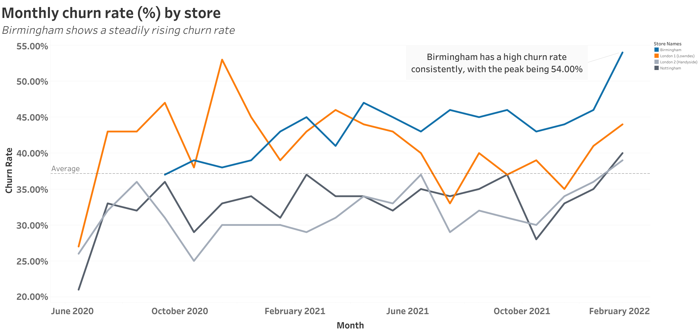
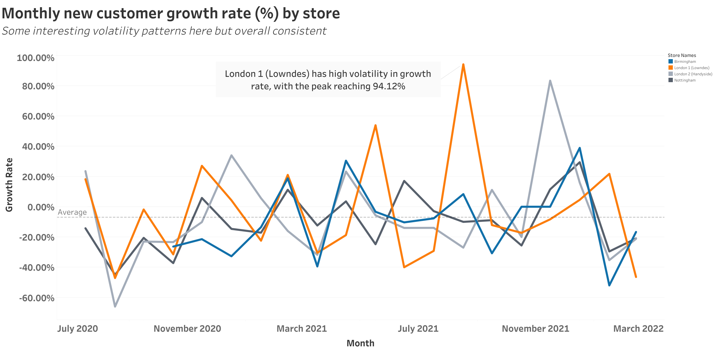

Store Performance Analysis and Marketing Recommendation
Group coursework project, MSc Business Analytics, University of Nottingham
Note: This is a short excerpt from a group coursework project. Dataset details and the full report are not shared in line with coursework guidance. If you would like more detail on the SQL, methodology, or full findings, feel free to reach out.
Overview
We were asked to recommend which one of four stores should receive additional marketing budget. The goal was not to pick the best-performing store, but the one with the most potential for improvement.
Our group evaluated store performance using customer and revenue metrics. I focused on customer behaviour, specifically retention and acquisition patterns.
My Contribution
I analysed customer retention and acquisition across all stores using SQL and built the supporting visuals in Tableau. I developed monthly churn and new customer growth metrics, which became key inputs into the final recommendation.
The aim was to understand not just how each store was performing, but why. It is also important to note that these figures have been modified for public sharing. Exact names and numbers can be shared privately upon request.
Tools
- SQL for data extraction and KPI calculation
- Tableau for dashboarding and visual storytelling
- Excel for supporting analysis
Key Insight
One store, marked in blue, showed a very different pattern compared to the others. It had the highest churn rate in the dataset, peaking at around 54%, well above the company average rate shown below.
However, its new customer growth rate remained broadly in line with the other stores, including the strongest performer. This was the key insight. The store was not struggling to attract customers, but it was struggling to retain them.
That difference matters. A weak store would show both low growth and high churn. Birmingham only showed one side of that problem, which suggests a fixable issue rather than a failing location.
Monthly Churn Rate (%) by Store

This makes the problem visible over time and shows that the issue is persistent rather than a one-off spike.
Monthly New Customer Growth Rate (%) by Store

When viewed together, these charts show that the issue is retention, not acquisition.
Recommendation
Our group recommended focusing marketing investment on the blue store. While it underperforms on headline metrics, it offers the strongest upside.
- Customers are still being acquired at a normal rate
- Retention is the main bottleneck
- Improving loyalty could significantly increase customer lifetime value
This makes it a stronger candidate for intervention than already well-performing stores, where gains from additional marketing are likely to be smaller.
What I Took Away
This project changed how I think about performance analysis. The most valuable insight was not identifying the best store, but identifying where there is a clear and solvable gap.
Combining churn and growth made it possible to diagnose the problem properly, rather than just describe it.
Want to see more?
I am happy to share more details on the SQL logic, dashboard design, or the full report on request.